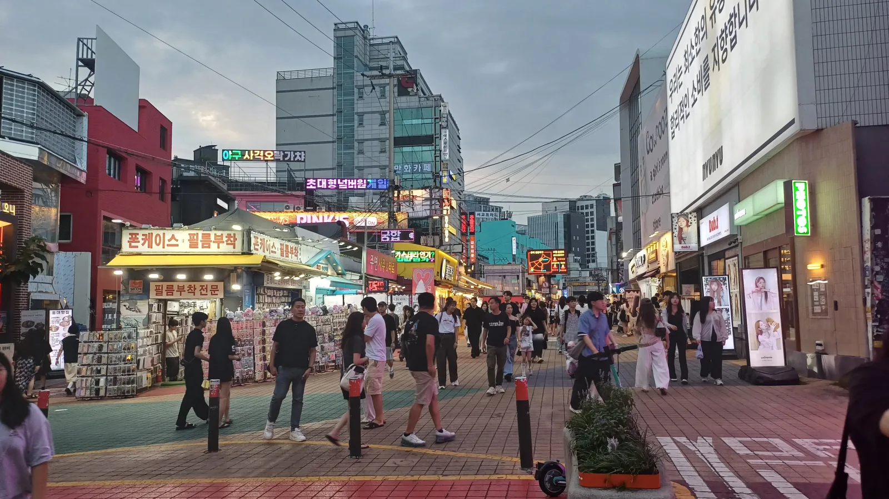
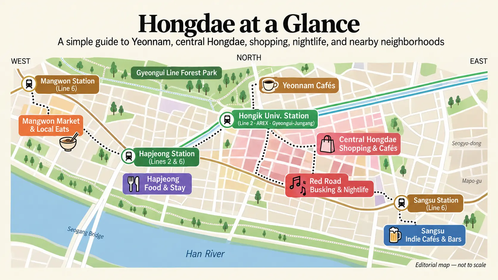
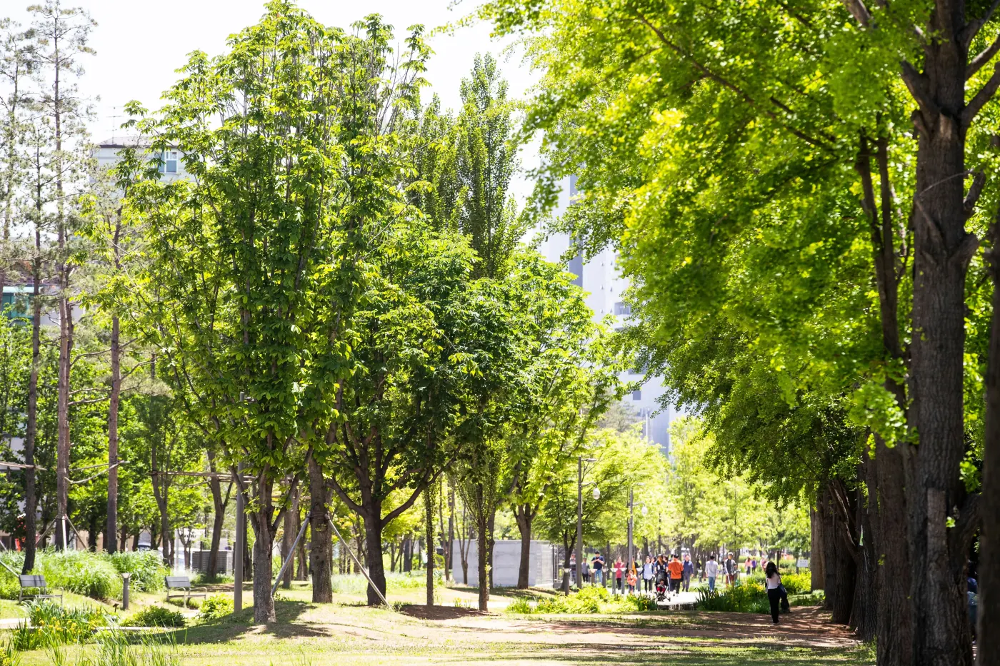
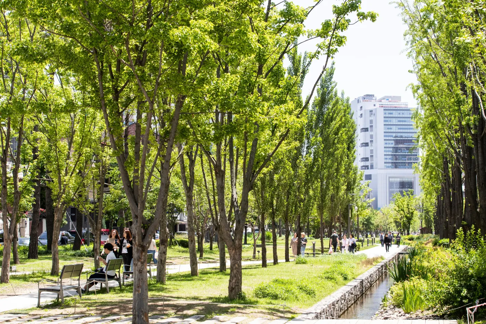
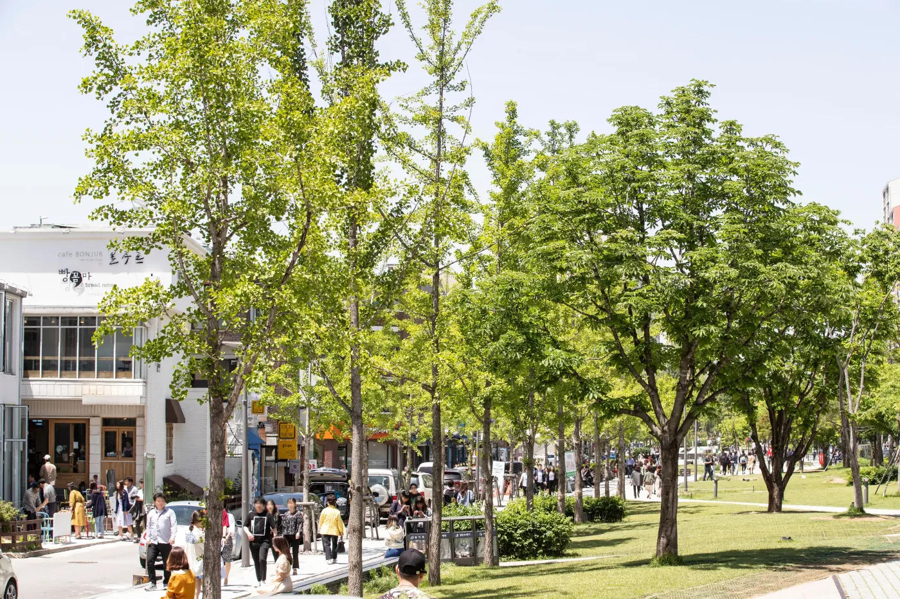
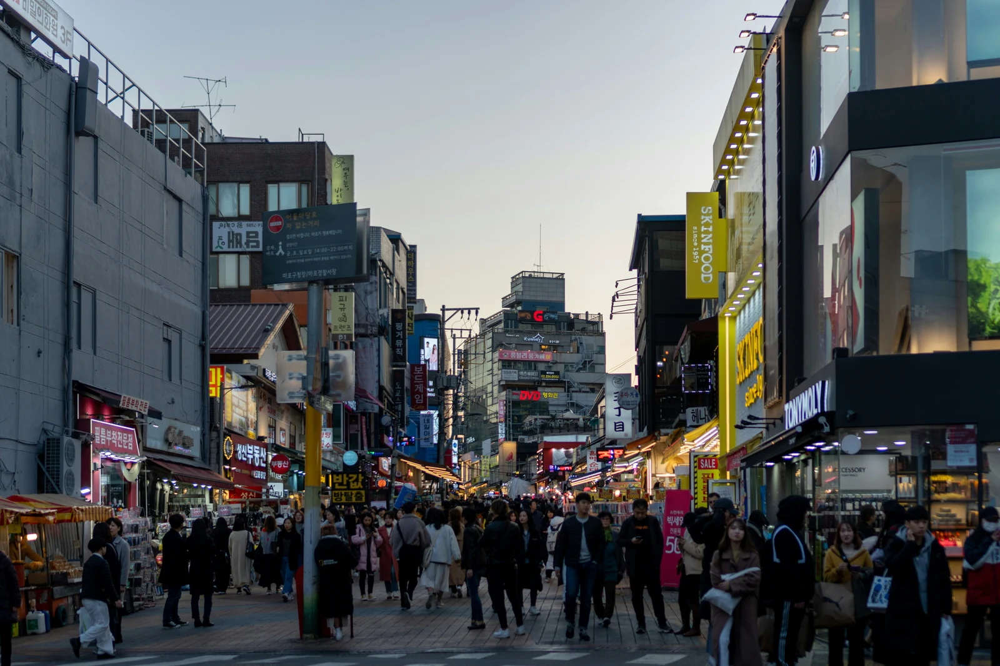
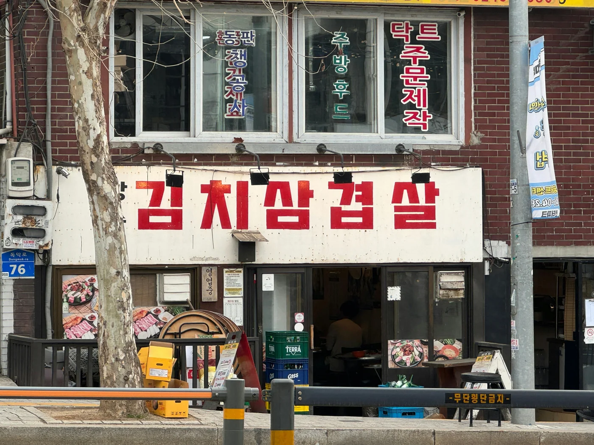
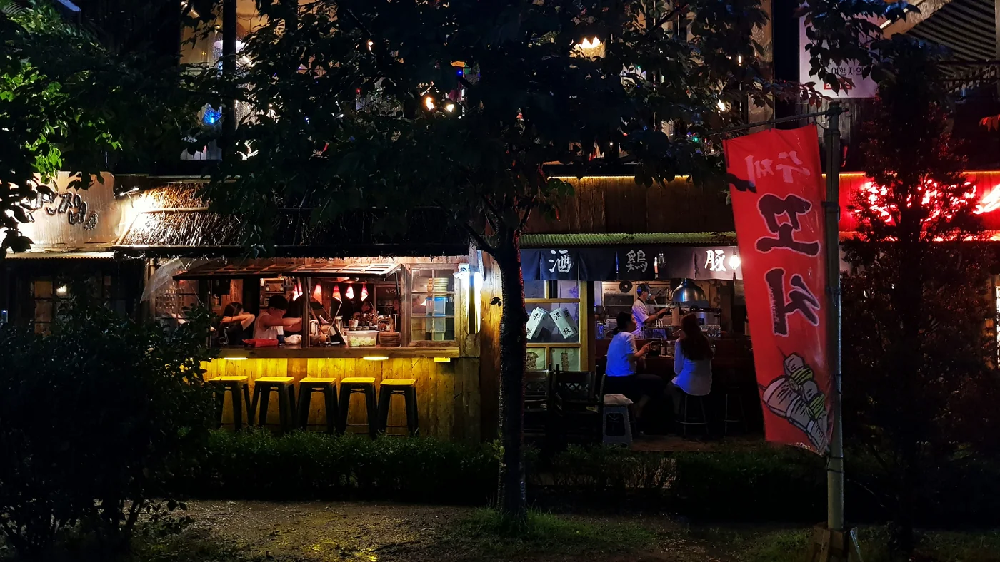
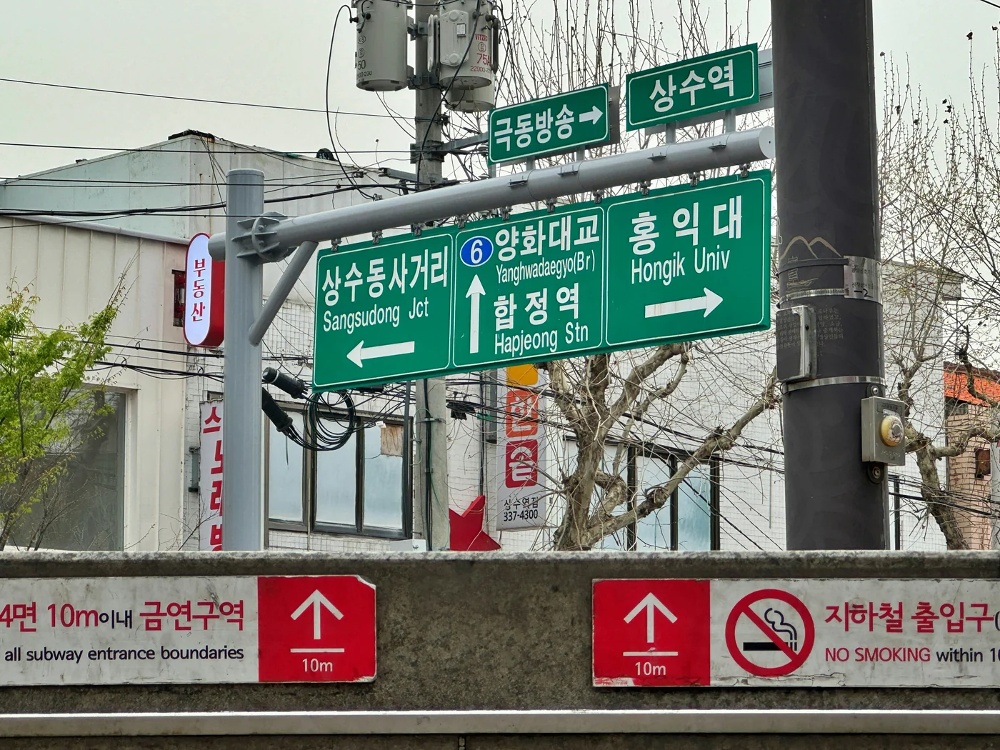

弘大旅行ガイド 2026
弘大は、チェックリストではなく「ひとつの街」として計画すると使いやすくなります。延南洞か、よりにぎやかな弘大中心部から始め、買い物、食事、パフォーマンス、そして自分が本当に過ごしたい夜に合わせて一日を組み立ててください。

旅行者が実際に弘大を選ぶ理由
弘大は、行く前に誤解されやすい街です。
「クラブ、酒、学生の街」という見方もあれば、「空港鉄道で直接行けるソウルの街」という見方もあります。どちらも間違いではありませんが、旅行者にとって弘大が便利な理由の大半は、それだけでは説明できません。
弘大の価値は、いくつもの小さな希望が重なったときに見えてきます。
午後は延南洞を歩き、予約なしでカフェや買い物に立ち寄り、夕方からにぎやかな通りへ移って夕食を取り、その後も選択肢を残せます。路上ライブ、ライブミュージック、カラオケ、フォトブース、深夜カフェ、買い物があるため、主要観光が終わった後も街の使い道が急になくなりません。
弘大に泊まるなら、この点はさらに重要です。
宮殿や博物館は一度訪れる明確な理由をくれます。弘大は、毎回新しい一日分の旅程を作らなくても、何度か違う夜の過ごし方を作れます。ある午後はしっかり観光し、次の2晩はソウル中心部から戻った後に別の使い方をすることもできます。
空港アクセスは魅力の一部ですが、それだけで宿泊地を決めるべきではありません。朝の多くを鍾路、宮殿、ソウル中心部で早く始め、夜も早めに終えるなら、弘大の利点は小さくなります。その場合は、ここに泊まるより午後から夜に一度訪れるほうが合理的です。
夕食後の時間を本当に使う人にとって、弘大は「泊まる価値」が生まれます。
違いはそこです。

どこから始める？ 3番出口か9番出口か
初めてなら、歩きやすい3番出口から
初めて訪れる場合、Korea Insideの基本ルートは3番出口側の延南洞からです。
最初から最も混雑した商業エリアへ入るのではなく、慶義線スッキル公園をルートの序盤に置けます。まず歩き、小さな路地を見て、気が向けばカフェで休み、午後が遅くなるにつれて弘大中心部へ移れます。
カップル、一人旅、カフェを重視する人、そしてにぎやかな弘大が自分に合うかまだ分からない人には特に使いやすい始め方です。
弘大を避けているわけではありません。
より良い順番で入っているだけです。

写真：韓国観光公社 / Lee Beom-su
にぎやかな中心部が目的なら9番出口から
Red Road、買い物、キャラクターグッズ、K-POPグッズ、弘大中心部のストリート感が目的なら、9番出口のほうが直接的です。
Red RoadのR1「Red Culture Market」区間は、弘大入口駅9番出口から約220mで始まります。Red Road自体はテーマ別の区間を通り約2km続くため、観光スポットの一点ではなく、歩きながら使うエリアとして考えるほうが実用的です。
午後遅くに到着し、先に延南洞へ寄る時間がない場合も、9番出口から始めるほうが向いています。
実用的な使い分け
午後にゆっくり歩く時間があるなら：
3番出口 → 延南洞 → 慶義線スッキル公園 → 弘大中心部 → 夕食 → Red Road
買い物や夜の予定を中心に短く回るなら：
9番出口 → 弘大中心部 / Red Road → 夕食 → 路上ライブ、またはその夜に予定していること
地図の上では小さな違いです。
でも実際に街を歩く旅行者にとっては、一日の流れが変わります。
まず延南洞へ：弘大中心部へ移るまで、どれくらい過ごす？
弘大入口駅3番出口 → 慶義線スッキル公園 → 延南洞の路地 → カフェ1軒 → 弘大中心部
3番出口なら、まず街の落ち着いた側へ入れます。
慶義線スッキル公園は3番出口から約450mで始まります。公園全体はソウルの複数エリアを通って6.3km続きますが、その数字は弘大観光には重要ではありません。公園を完歩しに来たわけではないからです。
初めてなら、延南洞区間だけで十分です。

写真：韓国観光公社 / Lee Beom-su
スッキル公園を長距離ウォークにしない
この公園は、主役にするより午後の始まりとして使うほうが向いています。
少し歩いて街がどう広がるかを見ながら、脇道が面白そうならメインの遊歩道を外れてください。緑の通路の外側にカフェ、ベーカリー、小さな飲食店、ショップがあるため、公園だけを長く歩くと延南洞そのものを見逃すことがあります。
初めて訪れる人なら、周辺の路地へ入る前に実際に公園を歩くのは20〜30分ほどで十分なことが多いです。
天気が良く、ゆっくり歩くのが好きなら長くいて構いません。
暑い、雨が降っている、朝からすでに歩いて観光した、という日は短くしてください。
目的は距離ではありません。
午後の最初から最も混雑した通りに入らず、自然に弘大へ到着することです。
カフェをルートの休憩にする
延南洞には十分な数のカフェがあるので、「たった一つのベスト」を探すこと自体がコーヒー以上の作業になりかねません。
特定のカフェそのものが目的でないなら、まず歩き、街を少し見てから休む店を決めてください。
それで二つの問題を同時に解決できます。
座る前に延南洞を見られ、カフェも遠回りして行く別目的地ではなく、にぎやかな時間へ移る前の本当の休憩になります。
初めて弘大を回るルートなら、カフェ休憩は45〜60分ほどで十分なことが多いです。
ソウル旅行の主目的のひとつがカフェなら、この目安は無視して延南洞にもっと時間を使ってください。その場合、カフェ通りそのものが休憩ではなくアクティビティです。

写真：韓国観光公社 / Lee Beom-su
延南洞は約2〜2時間半を目安に
初めて一般的に回るなら、実用的な目安は次の通りです。
公園散歩 + 路地歩き + カフェ1軒 = 約2〜2時間半
これは予約表ではありません。
時間を使いすぎないための目安です。
目安がないと、延南洞だけで午後が静かに終わることがあります。それ自体を望むなら問題ありませんが、夕方から最も雰囲気が変わる弘大中心部に使える時間は減ります。
14〜15時ごろに始めれば、このペースなら自然に夕方前に弘大中心部へ移れます。
昼から最も混雑した通りへ入り、ネットで見た「弘大らしい弘大」になるまで待つより、この移り方のほうが自然です。
移動するタイミングを知る
延南洞の「ここで終わり」というランドマークはありません。
カフェ休憩を終えた、通りが似て見えてきた、買い物や食事へ進みたくなった。この三つのどれかが起きたら移動のタイミングです。
弘大入口駅側へ戻り、そのまま弘大中心部へ進みます。
変化ははっきり分かります。
通りはさらに混み、買い物の存在感が増えます。K-POP・キャラクターグッズ、フォトブース、ビューティーショップ、期間限定ポップアップが、より大きく目に入るようになります。
このペースの変化があるからこそ、二つのエリアは別々より一緒に回るほうが機能します。
延南洞は午後に余白をくれます。
弘大中心部は、その午後に勢いを加えます。
現実的な午後の時間例
時間の目安が欲しいなら、時刻表ではなく出発点として次を使ってください。
14:00〜14:15 — 3番出口で位置を確認
14:15〜14:45 — 慶義線スッキル公園
14:45〜15:30 — 延南洞の路地
15:30〜16:30 — カフェまたはベーカリー休憩
16:30〜17:00ごろ — 弘大中心部へ移動開始
17:00以降 — 買い物、ポップアップ、よりにぎやかなストリート
夕食後 — Red Road、路上ライブ、または自分が本当に過ごしたい夜
1時間前後ずれても気にしなくて大丈夫です。
大切なのは順番です。
最初はゆっくり。後半はにぎやかに。
弘大中心部：店の数ではなく、興味で買い物を選ぶ
延南洞 → 買い物の優先テーマを決める → 興味があればポップアップかフォトブースを1つ → 夕食 → Red Road
延南洞から弘大中心部へ出ると、突然ボリュームを上げられたように感じることがあります。
通りはさらに混み、店の看板が次々と目を引き、周りの人が入っているという理由だけで店に入り続けるうちに、2時間が過ぎることもあります。
その回り方から始めないでください。
買い物を始める前に、自分が何を探しに来たのかを決めてください。
まずK-POPかファッションかを決める
K-POP、キャラクターグッズ、アルバムが優先なら、駅周辺の店を1軒「基点」にすると回りやすくなります。
AK Plaza内のWITHMUUでは、現在、公式アルバム、グッズ、ペンライトを扱い、小規模な体験要素もあります。1番出口近くのK-Pop Square Hongdaeは、グッズ、展示、入れ替わるポップアップを扱うK-POP専門空間として運営されています。
二つあるからといって、両方へ行く必要はありません。
自分が本当に好きなアーティスト、キャラクター、イベントを扱っているほうから始めれば十分です。どちらにもなければ、そのまま次へ進んでください。
ファッションやコスメなら、9番出口近くのR3エリアへ向かいます。弘大でも衣類、コスメ、トレンド系ショップが比較的密集している買い物エリアです。
店のチェックリストではなく、買い物に使う「時間枠」を決めてください。
夕食と夜の弘大も楽しみたい旅行者なら、最初の買い物は60〜90分ほどが使いやすい目安です。
買い物そのものがソウル旅行の大きな目的なら、もっと長くいて構いません。
そうでなければ、買い物袋が旅程そのものになる前に切り上げてください。
ポップアップは「期間限定」。常設スポットだと思わない
弘大のポップアップは、自分の旅行日に何があるかで内容が変わるからこそ確認する価値があります。
同時に、古い旅行ガイドが最も早く間違いになる分野でもあります。
数か月前に見たK-POP、キャラクター、ファッション、コラボイベントはすでに終了している可能性があります。別のイベントは事前予約、当日ウェイティング、時間指定入場が必要なこともあります。たとえば2026年のK-Pop Squareイベントでは、事前予約枠と後半の現地ウェイティング枠が分けられていました。
だから、長期的に使う旅程を特定のポップアップ中心に作らないでください。
代わりに、次のルールを使います。
旅行直前に開催中のイベントを確認し、もともと興味があるものだけ1つ追加する。
好きなアーティストやIPなら、1時間ほど予定を組み替える価値があるかもしれません。
興味がないなら、限定グッズの長い行列に並ぶより弘大そのものを歩くほうが時間を有効に使える可能性が高いです。
バズっている行列が、自動的に観光スポットになるわけではありません。
フォトブースは、歩いている途中で入る
弘大、延南洞、上水、合井には4カットフォトブースが十分にあるので、何となく選んだ1軒のために街を横断する必要はほとんどありません。
2026年現在、Life4Cuts、Photoism、Haru Film、Photograyなど多数のフォトブース店舗が弘大周辺にあります。
多くの旅行者にとって、使い方は単純です。
気になる店を見つけたら、フレームや背景を確認して入る。
特定のK-POPコラボフレームが目当てなら、その企画に参加しているブランドや店舗を先に調べてください。それ以外なら、フォトブースは地下鉄移動まで必要な別目的地ではなく、買い物途中の10〜20分の休憩として扱うほうが自然です。
友人同士やカップルには特に相性がよく、デジタル中心の一日の中で手元に残るものを持ち帰れます。
一人旅でも避ける必要はありません。ブースはセルフ式です。判断基準は「グループがいるか」ではなく、「その写真が欲しいか」です。
買い物袋に夜の予定を支配させない
これは想像より早く現実的な問題になります。
アルバム、キャラクターグッズ、コスメ、服は1点ずつなら簡単に買えます。でも数軒回ると、その荷物を持ったまま夕食、路上ライブ、その後の夜まで過ごすことになります。
弘大に泊まり、ホテルが十分近いなら、夜の前に一度買ったものを置きに戻る遠回りには価値があります。
別のエリアから訪れているなら、買い物を止める地点を決めておいてください。
「次の店にはもっと良いものがあるかも」と買い続け、見たかった夜の時間になる前に弘大そのものに疲れてしまわないようにしてください。
買い物は一日を盛り上げるものです。
一日を終わらせるものではありません。

写真：Unsplash / patrick
夜を始める前に夕食へ移る
延南洞ルートを使い、17時ごろ弘大中心部へ着いたなら、現実的な切り替えは次のようになります。
17:00〜18:15 — ファッション、K-POP、キャラクター、ビューティーの買い物
任意で15〜30分 — ポップアップまたはフォトブース
18:30〜20:00ごろ — 夕食
夕食後 — Red Road、路上ライブ、ライブミュージック、カラオケ、バー、深夜カフェ
これも予約表ではありません。
弘大の買い物時間が夜を丸ごと飲み込まないようにするための目安です。
歩いている途中でもっと面白いものを見つけたら、予定を変えてください。
その柔軟さこそ、そもそも弘大で時間を過ごす理由のひとつです。
弘大周辺で何を食べる？ 食事を一日の流れに合わせる
食を楽しむなら望遠 → カフェ休憩は延南洞 → 夕食は弘大中心部 → 夜食はその場で柔軟に
弘大には飲食店が多すぎるほどあり、「どこで食べるか」を決めること自体が旅程疲れの原因になります。
有名店リストから始めないでください。
まず、どの食事なのかを考えます。
ランチ、カフェ休憩、友人との夕食、夜遅い公演後の食事では、解決したいことが違います。同じ方法で計画する必要はありません。
ランチそのものを体験にしたいなら望遠へ
一つの大きな食事を座って食べるより、複数の韓国料理を少しずつ試したいなら、望遠市場は夕食後の寄り道よりランチに向きます。
ここで食べるコツは「シェア」です。
タッカンジョン、コロッケ、トッカルビ、小さな市場おやつなら、カップルやグループで一つの店に最初から決めず、いくつか試せます。
最初の5分でおいしそうなものを全部買わないでください。
まず1〜2品買い、もう少し市場を歩いてから、まだ食べたいか考えます。
当たり前に聞こえますが、揚げ物、甘い飲み物、チキンカップを続けて買った後で、それがすでにランチだったと気づくことがあります。
天気が快適なら、テイクアウトした食べ物を持って望遠漢江公園まで続けることもできます。
雨、猛暑、あるいはグループがすでに疲れているなら、市場だけを目的地にして川は省いてください。
望遠は、食べること自体をアクティビティにできるから機能します。
有名屋台のチェックリストに変える必要はありません。
延南洞のカフェはランチと分ける
前半の延南洞ルートを使ったなら、カフェは基本的に休憩です。
カフェそのものがソウル旅行の主目的でない限り、その位置づけで十分です。
重いランチの直後に大きなデザートカフェへ入ると、弘大中心部に着く前から午後全体のペースが落ちることがあります。
コーヒー、ペストリー、またはシェアするデザート1つで十分な旅行者も多いです。
また後で食べられます。
弘大は、次に食べる場所が見つからない街ではありません。
カップルやグループは夕食を夜の基点にする
弘大中心部では、店と店の間に夕食を押し込むより、夕食そのものを夜の一部にするほうが向いています。
カップルやグループなら、韓国焼肉やタッカルビはシェアしやすく、自然に時間をかける食事なので特に相性が良いです。
フライドチキンは、もっと気軽に食べたいときや、夕食よりその後の夜の予定を重視するときに向きます。
何を選ぶかは、その後に何をするかで決まります。
Red Road、路上ライブ、ライブミュージックへ行きたいなら、SNSで話題だったという理由だけで街を横断してレストランへ行かないでください。
夕食後に使う予定の弘大エリアから離れない店で食べるほうが実用的です。
とても良い店でも、その日の旅程には合わない店があります。

写真：Unsplash / suzi-kim
一人旅は、席に着く前に注文条件を確認する
弘大には、一人でも食べやすいものがたくさんあります。
難しいのは一人で食べることではありません。
一部の店が「シェア前提」と考えている料理を選ぶことです。
韓国焼肉、タッカルビ、コプチャンなどの鉄板・鍋料理は、メニューに1人前の価格が書かれていても最低注文数がある場合があります。最低数量を注文すれば一人客を受け入れる店もあれば、特に混雑時は一人席を受けない店もあります。
席を決める前に確認してください。
一人利用に合わない店なら、「食のミッションに失敗した」と考えず、次の店へ移れば大丈夫です。
一人用の食事はずっと簡単です。
スープ、チゲ、麺、ご飯もの、キンパなど、一杯・一皿で完結する料理は一人の日程に自然に入ります。
焼肉そのものが重要なら、「弘大の焼肉店ならどこでも一人で入れる」と考えず、一人客を受け入れる店を明確に探してください。
目的は、おいしく食べることです。
最低注文ルールと勝負することではありません。
ソウルの食費を全部弘大で使わない
弘大は便利ですが、その便利さを理由にソウルでの食事を全部ここで済ませる必要はありません。
弘大に泊まるなら、その便利さは朝食、予定していなかった夕食、別エリアから戻った後の夜食に使ってください。
それ以外の食事は、その日にすでに訪れている場所で楽しめば十分です。
宮殿と鍾路の日なら、鍾路で食べられます。
乙支路で過ごす夜なら、そのまま乙支路で食べられます。
望遠の日なら、望遠を使うべきです。
保存したレストランがすべてホテル近くにあるという理由だけで毎回ソウルを横断して弘大へ戻ると、街全体を旅程に使える利点を自分で減らしてしまいます。
ホテル周辺は、食事を楽にするために使うものです。
すべての食事場所を決めるものではありません。
夜食は「そのとき決める」予定として残す
一日の中で、ここだけはあまり計画しなくても構いません。
クラス、公演、時間指定の予定で夕食が早かったなら、終わった後に本当にお腹が空いているかを判断してください。
フライドチキン、麺、簡単な夜食、デザート、コンビニの食べ物、あるいは何も食べないという選択でも構いません。
弘大が夜遅くまで動いているという理由だけで、22:30に2軒目の有名店を予定に入れないでください。
本当にお腹が空いているかもしれません。
でも、疲れていて買い物袋を3つ持っているかもしれません。
選べる余白を残してください。
弘大で一日過ごすときの実用的な食のリズム
弘大そのものが午後から夜の主な予定なら、現実的な流れは次のようになります。
ランチは別エリア、または軽めに
→ 午後に延南洞でカフェ
→ 夕方への切り替わりに弘大中心部で夕食
→ Red Road / ライブミュージック / カラオケ / バー
→ まだ食べたければ夜食
弘大＋望遠を一日で回るなら、前半を変えます。
望遠市場でランチ
→ 天気が良ければ望遠 / 漢江
→ 合井または上水
→ 弘大中心部
→ 遅めの夕食、または軽めの夜ごはん
すべてソウル西部にあるという理由だけで、二つのルートを無理に一日に詰め込まないでください。
使いやすい食の計画とは、ちょうど良い時間にお腹が空く計画です。
弘大の有料体験：一日を変えるものだけ1つ予約する
K-POPダンス / 香水 / リング作り / その他のワークショップ → 興味を1つ選ぶ → 時間を予約 → その予約を中心に弘大の残りを組む
弘大には予約できる体験が多く、自由に歩ける街の一日を予約だらけのスケジュールにしてしまいがちです。
そうしないでください。
有料体験に意味があるのは、弘大をただ歩いたり、買い物したり、食べたりするだけでは得られないものがあるときです。
初めて訪れる多くの旅行者なら、予約する体験は1つで十分です。
K-POPダンスは「見る」より「自分でやりたい」人に向く
K-POPがソウルへ来た理由のひとつなら、もう1時間グッズを買うよりダンスクラスのほうが明確な意味を持ちます。
現在の弘大のクラスには、約90分の英語ガイド付き、少人数グループ、プライベート形式があります。初心者向けと明記されたものもあり、ダンス経験が必須とは限りません。
本当に考えるべきなのは、自分で振付を覚えて踊りたいかどうかです。
答えが「はい」なら、そのクラスを午後の固定予定にしてください。
3時間買い物してから、実際にお金を払った体験へ疲れた状態で行かないでください。
次のような単純な流れのほうが機能します。
延南洞またはランチ → ダンスクラス → 短い休憩 → 弘大中心部で買い物 → 夕食 → 夜
クラスが遅い時間なら、買い物とクラスの順番を逆にします。
柔軟に動かせる予定が固定予約に合わせるのであって、その逆ではありません。
グループかプライベートか、理由を持って選ぶ
参加型のグループクラスは、完全カスタムの料金を払わずに体験そのものを楽しみたいときに向きます。
自分のグループを作って参加する必要がないので、一人旅にも利用しやすいです。
プライベートクラスは、曲選びが重要なとき、友人同士で一緒に覚えたいとき、経験や自信の差が大きくグループクラスだと気まずくなりそうなときに価値が上がります。
現在の商品を見ると、プライベートでは曲を選べる場合があり、参加型クラスでは決められた振付を使うケースがあります。
「プライベート」という響きが良いだけで追加料金を払わないでください。
カスタマイズによって体験が実際に変わるときに、その料金を払えば十分です。
香水作りは、静かな屋内の1時間が欲しいときに合う
弘大の体験がすべて音楽や人混みである必要はありません。
現在の弘大の香水ワークショップには、ガイド付きで調香するものから比較的自由に作る形式まであり、所要時間はおおむね1時間〜90分です。複数の商品で英語対応も確認できます。
特に次のような人に合います。
ゆっくりした時間を過ごしたいカップル、
予定のある屋内体験を好む一人旅、
雨で街歩きや路上ライブの魅力が下がる午後。
予約する理由は、香水作りが「韓国旅行で絶対やるべき体験」だからではありません。
旅の一部を、自分で作って持ち帰れるものに使いたいからです。
香りに興味がなければ、飛ばして構いません。
リング作りは、予約ページで見るより時間がかかる
リング作りは、小さな追加体験のように見えます。
実際には、そうでないことが多いです。
現在の弘大のシルバーリング体験は、デザイン選び、サイズ調整、成形、仕上げ、任意の刻印やストーン加工を含め、約2時間かかる場合があります。
つまり、短い買い物休憩というより、午後の主要アクティビティに近い時間です。
カップル、友人同士、手作りのお土産を明確に欲しい人には自然に合います。
すでに予定が詰まった半日には合いません。
2時間のワークショップを予約するなら、別の予定を1つ減らしてください。
ただ追加するだけにしないでください。
支払う前に5項目を確認
クラスやワークショップを予約する前に確認するもの：
所要時間
90分の体験でも、到着、受付、その後の移動まで含めると実際には2時間近く使うことがあります。
対応言語
ソウルの体験だから自動的に英語で進むとは考えないでください。現在の弘大の商品にも、英語ガイド付きから多言語動画ガイド形式まで違いがあります。
グループかプライベートか
他の旅行者と一緒に参加するのか、自分たちだけのセッションを予約するのかを把握しておきます。
年齢・参加条件
たとえば現在のダンス商品には7歳から参加できるものもありますが、それをすべてのクラスに一般化せず、予約する商品ごとに確認してください。
キャンセル・到着条件
ソウルの忙しい一日の途中に体験を入れるなら、わずかな価格差より、こうした条件のほうが重要になることがあります。
予約を中心に旅程を組む前に、条件を読んでください。
旅程を豪華に見せるためだけに体験を予約しない
弘大は、チケットがなくても十分にやることがあります。
延南洞を歩き、弘大中心部を見て回り、食事をし、ポップアップを確認し、路上ライブを見たりカフェに座ったりするだけでも、午後から夜は十分に埋まります。
有料体験を入れるなら、その時間は既存の予定の一部と入れ替えるべきです。
予定の上に重ねて追加するものではありません。
現在あるクラスやワークショップの中に本当にやりたいものがなければ、お金を使わず、その日の自由度を残してください。
予約した体験をどこに入れるか
初めて弘大を訪れ、体験を1つ入れたいなら：
選択肢A — K-POP中心
延南洞
→ K-POPダンスクラス
→ 弘大中心部で買い物
→ 夕食
→ Red Road / 夜
選択肢B — カップル / クラフト中心
延南洞
→ カフェ
→ リングまたは香水ワークショップ
→ 夕食
→ 路上ライブ / ライブミュージック / 深夜カフェ
選択肢C — 雨の日
屋内ショッピング
→ ワークショップまたはダンスクラス
→ 夕食
→ カラオケ / カフェ
自分が本当に興味を持てる形で一日を変えてくれるものを選んでください。
そして、その1つだけを予約します。
夕食後の弘大：夜をどこまで続けるかを選ぶ
夕食 → Red Roadを確認 → 路上パフォーマンス、ライブミュージック、カラオケ、バーから選ぶ → まだ続けたければ続ける
弘大は、夕食が終わった瞬間にクラブ街へ変わるわけではありません。
変わるのは、選択肢の数です。
外でパフォーマンスを見てもいいし、もう一杯コーヒーを飲んでも、ライブを聴いても、カラオケへ行っても、バーへ入っても、さらに遅くまで過ごしても構いません。そのどれも「ちゃんと弘大の夜を過ごす」ための必須条件ではありません。
だから、夕食後に考えるべきなのは次の質問ではありません。
「ナイトライフはどこ？」
こう考えます。
「今夜、あとどれくらい夜を楽しみたい？」

写真：Unsplash / daesun-kim
店に入る前に、まず外を歩く
天気に問題がなければ、まずRed Roadから始めます。
そうすると、夜の前半を柔軟に使えます。
R2エリアは一つの公演ステージではなく、路上ライブのための通りとして整備されています。登録されたパフォーマンスには音楽、ダンス、マジック、パントマイムなどがあります。
チケットは不要で、到着前に「何を見るか」を正確に決めておく必要もありません。
まず歩いてください。
気になるものがあれば止まります。
なければ、そのまま進みます。
これは、夜の残りをナイトライフに固定せずに弘大の夜を体験する最も簡単な方法のひとつです。
路上ライブは固定時刻のショーではなく「その日の情報」として扱う
たとえば、次のような一文を前提にソウル旅行を組まないでください。
「弘大の路上ライブは毎晩20時に始まる」
Red Roadは日付ごとのスケジュールを公開しており、パフォーマンス区画や出演者は変わります。天候や運営状況でもプログラムが変わることがあります。
実用的なルールは簡単です。
訪問直前にRed Roadの公式スケジュールを確認する。
本当に見たいバンドやパフォーマンスがあるなら、それに合わせて夕食時間を調整します。
そうでなければ、「旅行ガイドに路上ライブは必見と書いてあった」という理由だけで1時間待たないでください。
通りそのものは、そこにあります。
夜は別の方向へ進めます。
パフォーマンスそのものが目的ならライブ会場を選ぶ
ライブミュージックは、路上ライブとは別の判断です。
路上ライブは、歩いている途中で偶然出会えるから使いやすいです。
ライブ会場は、チケット、開始時刻、そして自分が興味のある出演者かどうかが関わるため、より計画が必要です。
たとえばKT&G Sangsangmadang Hongdaeには専用ライブホールがあり、2026年もコンサートや音楽プログラムを開催しています。
だからといって、必須スポットになるわけではありません。
現在のプログラムを確認してください。
出演者や音楽のジャンルに興味があるなら、その公演を中心に夜を組みます。
興味がないなら、「弘大のインディーシーンを体験した」と言うためだけに会場へ入る必要はありません。
理由は音楽そのものであるべきです。
夜を延長したいけれど、ナイトライフにしたくないならカラオケ
友人同士、カップル、一部の家族には、夕食後の最も簡単な選択がカラオケです。
地元の音楽シーンに詳しくなくても、合うクラブを探さなくても、深夜まで外にいなくても楽しめます。
何時間いるか、何を歌うかを自分たちで決め、グループが満足したら帰れます。
ソウルを一日歩いた後は、その柔軟さが重要です。
22時に全員疲れているならホテルへ戻ればいいです。
急に元気が出たなら、別の旅程を作らずカラオケで夜をもう1時間延ばせます。
弘大らしいにぎわいは感じたいけれど、お酒やクラブには興味がない旅行者には特に使いやすい選択です。
お酒を飲まなくても弘大の夜は使える
短い弘大ガイドが誤解しやすいのが、この部分です。
ナイトライフと飲酒は同じではありません。
夜の過ごし方は、たとえば：
夕食 → Red Road → フォトブース → デザートまたはカフェ → ホテル
または：
夕食 → 路上ライブ → ライブミュージック → ホテル
または：
夕食 → カラオケ → 夜食 → ホテル
ティーンのいる家族、お酒を飲まないカップル、クラブへ行きたくない一人旅でも、夕食後に最も面白くなる弘大の時間を十分に使えます。
弘大のすべての顔に参加する必要はありません。
クラブやパブクロールは、より限定された目的に使う
クラブが本当に旅行の一部なら、計画して構いません。
ただし、弘大だからという理由だけでクラブを標準のおすすめにしないでください。
一人旅で、明確に社交的な夜を求め、バーやクラブを自分で選ぶよりグループに参加したいなら、ガイド付きパブクロールが合うことがあります。
一方で、次の人にはあまり合いません。
お酒を飲まない人、
組織されたグループ型ナイトライフが苦手な旅行者、
家族、
音楽、食事、カフェで夜を終えたい人。
弘大に泊まると、この判断が変わる
これは弘大に宿泊する強い理由のひとつです。
ホテルが近ければ、19時の時点で「今夜は何時まで」と決める必要がありません。
夕食を食べ、パフォーマンスを少し見てから、さらに1時間外にいたいかをその場で決められます。
明洞、鍾路、その他のエリアへ戻るなら、判断は変わります。
ある時点から、帰り道そのものが夜の一部になります。
だからといって、別のエリアから弘大を訪れるのが難しいわけではありません。
つまり、夜が自然に何とかなると思い込まず、いつ帰りたいかを自分で分かっていればよいということです。
初めての弘大、現実的な夜の流れ
すでに午後を延南洞と弘大中心部で過ごした人なら：
18:30〜20:00ごろ — 夕食
夕食後 — Red Roadを歩き、その日に実際に何が行われているか確認
その後、1つ選びます。
路上パフォーマンス
外で過ごし、夜の自由度を残す。
ライブミュージック
時間やチケットを使う価値のある特定の公演があるときに行く。
カラオケ
クラブまで行くほどではないけれど、グループでもう一つ何かしたいときに使う。
バーまたはクラブ
「弘大なら行くべき」ではなく、それが自分の望んだ夜だから選ぶ。
夕食だけで十分だったら？
ホテルへ戻ってください。
それで弘大を逃したことにはなりません。
望遠・合井・上水：いつ「別の弘大の一日」として加える？
望遠市場 → マンニダンギル → 天気が良ければ望遠漢江公園 → 合井または上水 → 夜に弘大中心部
望遠、合井、上水は、広い意味で弘大の一日に自然につながります。
だからといって、弘大へ来る全員が追加する必要はありません。
3〜4時間しかないなら、延南洞と弘大中心部に絞ってください。望遠まで加えると、コンパクトな街歩きがソウル西部を広く回るルートに変わります。
一日の雰囲気が変わるだけの時間を取れるときに加えてください。
短い弘大観光に望遠を足さない
望遠は、Red Roadのすぐ横にある小さな追加スポットではありません。
市場、周辺の通り、場合によっては漢江まで入れると、それだけで一日の大きな時間枠になります。
一日たっぷりあるなら、よく機能します。
K-POPクラス、数時間の買い物、弘大での夜の予定がすでにある日には、相性が悪いです。
旅程がすでに詰まっているなら、望遠は別の日に回してください。
地図上で二つの街が近く見えることと、同じ午後に無理なく入ることは別です。
ランチそのものを体験にするなら望遠市場から
望遠市場は、しっかり食べられる程度にお腹を空かせて行くと最も使いやすいです。
市場は40年以上続いており、手頃な価格の食べ物や気軽な食事で知られています。タッカンジョン、コロッケなどの市場グルメは現在もよく見られます。
市場の後はマンニダンギルでペースを落とす
市場を出た瞬間、次の大きなスポットへ急がないでください。
望遠の浦隠路周辺には、弘大中心部とは違うリズムがあります。
マンニダンギルには市場周辺のカフェ、飲食店、小さなショップがあり、弘大中心部より落ち着いたソウル西部の時間を作ります。市場と周辺の通りは、同じ徒歩エリアとして自然につながります。
にぎやかな市場ランチの後に、このエリアが役立ちます。
歩いてください。
興味を引くものがあれば見て回ります。
本当に休憩が必要なときだけ、コーヒーで止まれば十分です。
また「行くべき店10選」を作る必要はありません。
大事なのは、漢江まで続けるか判断する前に街のテンポが落ち着くことです。
望遠漢江公園は、天気がその価値を作る日にだけ追加する
もう1軒店に入るより、川へ行くほうが一日の雰囲気を大きく変えます。
望遠漢江公園には、弘大中心部にはない開けた空間、散歩道、川の景色があります。レクリエーション施設や約3.1kmの自転車道もあり、天気が快適なら滞在を延ばしやすい場所です。
だから、過ごしやすい天気の日には強い追加先になります。
大雨、厳しい暑さ、強い寒さ、全員の足がすでに疲れている日には、弱い追加先です。
旅程に「漢江」と書いてあるから行くのではありません。
川へ行きたいから行ってください。
天気が良ければ、公園をその日の最も長い「何もしない休憩」にできます。
天気が悪ければ完全に外し、そのまま次へ進みます。
合井と上水は、さらに二つの観光地ではなく「つなぎ」
ソウル西部の一日を作り込みすぎるのは、このあたりです。
次のルートを、
望遠
→ 合井
→ 上水
→ 弘大
4つの別々の観光ミッションにする必要はありません。
合井と上水は、密度の高い弘大の夜へ戻っていく途中の自然な移行として使うほうが向いています。
広いエリアは、カフェ、飲食店、本、小さな文化空間、弘大のインディー文化でつながっています。上水と合井は、独立した観光ミッションというより、広い弘大の一日の一部として使うほうが自然です。
だから、興味に合わせて使ってください。
本当に行きたいカフェ、書店、小さな会場、飲食店があれば止まります。
なければ、そのまま進みます。
通過したからといって、旅程に失敗したわけではありません。

写真：Unsplash / suzi-kim
漢江と弘大のナイトライフを、同じ長い一日に無理に入れない
本当の限界はここです。
市場ランチ、街歩き、長い川辺の休憩、カフェ、買い物、夕食、路上ライブ、深夜の活動は、紙の上ではすべて一日に入ります。
でも、足は反対するかもしれません。
望遠、弘大、買い物、漢江は地図上では組み合わせられますが、実際の限界を決めるのは、買い物、徒歩、途中の立ち寄りにどれだけ時間を使うかです。ここでルートが詰まりすぎることが多くなります。
だから、一日のどちら側を重視するか決めてください。
望遠と漢江が優先なら、弘大中心部へ入る時間を遅らせ、買い物を短くします。
弘大の買い物、クラス、ナイトライフが優先なら、望遠を短くするか漢江を外します。
回る街の数を最大化しないでください。
自分がその日に来た理由を守ってください。
現実的なソウル西部の一日
使いやすい一例は：
11:30〜13:00 — 望遠市場でランチ
13:00〜14:00 — マンニダンギルと周辺の通り
その後、選びます。
天気が良く、体力に余裕がある
→ 望遠漢江公園
または：
天気が悪い / 疲れた / 買い物を優先したい
→ 漢江を省く
その後：
合井または上水 → 弘大中心部
そして：
買い物または体験1つ → 夕食 → Red Road / 夜
この時刻を予約時間のように読まないでください。
大切なのは、余った2時間をどこに使うかです。
川？
買い物？
有料体験？
もっと長い夜？
この4つすべてを同じ優先度にはできない可能性が高いです。
このルートを選ぶ価値があるとき
望遠まで広げるのは、次のようなときです。
一日の大半を使える
食の探索を重視している
弘大中心部と対照的な、より静かな時間が欲しい
天気が良く、漢江へ行きたくなる
観光地を詰め込むより、歩くことや街の雰囲気を好む
逆に、次のような日は省くか短くします。
弘大に使えるのが半日だけ
すでに長めのワークショップやダンスクラスを予約している
買い物の優先度が高い
天気が悪く、漢江が快適ではない
グループの誰かがすでに歩き疲れている
望遠は良い追加先です。
義務ではありません。
18時には全員帰りたくなるソウル西部のフルルートより、短い弘大の一日のほうが良いこともあります。
立ち寄り先を増やす前に、弘大ルートを選ぶ
面白そうな場所をすべて「追加するべき立ち寄り先」にすると、弘大は急に計画しにくくなります。
ここまでで、すでに十分な選択肢があります。
本当に決めるべきなのは、ソウル西部をどこまで使いたいかです。
初めてなら、3つの形から1つ選んでください。短い弘大観光、午後から夜までしっかり使う弘大、または望遠から始めるソウル西部の一日です。
3つ全部を組み合わせないでください。
3〜4時間あるなら
ルートをコンパクトにします。
初めてで、まだ明るい時間が十分あるなら：
弘大入口駅3番出口 → 延南洞 → 慶義線スッキル公園 → カフェ1軒 → 弘大中心部
そのまま夜まで続けるなら：
弘大中心部 → 夕食 → Red Road
静かな延南洞からにぎやかな中心部へ変わる感覚を理解するには、これで十分です。観光を競争にする必要はありません。
遅い時間に着く、または買い物と夜の通りが来た主目的なら、延南洞を省いて中心部近くから始めます。
9番出口 → 弘大中心部 → 夕食 → Red Road
望遠は追加しません。
2時間のワークショップも追加しません。
短い滞在に必要なのは、立ち寄り先を増やすことではなく、判断を減らすことです。
一日の大半を使えるなら
時間が遅くなるにつれて弘大が変わる余裕を持たせます。
時間例 — 約5〜6時間
14:00 — 弘大入口駅3番出口
延南洞側から始め、最初から弘大中心部へ入らない。
14:10〜14:40 — 慶義線スッキル公園
延南洞区間を短く歩く。全長6.3kmをたどる必要はない。
14:40〜15:30 — 延南洞の路地＋カフェ1軒
路地を見ながら歩き、カフェ巡りで午後を埋めず、しっかり休憩する店を1軒選ぶ。
15:30〜15:50 — 弘大中心部へ歩く
駅方向へ戻り、そのままにぎやかなショッピング通りへ進む。
15:50〜17:50 — 弘大中心部
ファッション、K-POP・キャラクターグッズ、フォトブース、訪問日に実際に開催しているポップアップへ使う。
17:50〜19:05 — 夕食
有名店1軒のために弘大を横断せず、このエリアで食べる。夜の前にしっかり休む時間にもする。
19:05以降 — Red Roadと、自分で選ぶ夜
当日の公演スケジュールを確認し、路上ライブ、ライブミュージック、カラオケ、バー、深夜カフェから選ぶ。
初めてなら、次の流れが使いやすいです。
延南洞 → スッキル公園 → カフェ → 弘大中心部 → 買い物または有料体験1つ → 夕食 → Red Road
夕食後は、本当にまだ続けたいかをその場で決めます。
路上ライブ、ライブミュージック、カラオケ、バー、またはそのままホテルへ戻る。どれも正しい終わり方です。
重要な選択は午後にあります。
ダンスクラスや長めのワークショップを予約するなら、買い物時間を減らします。
買い物が弘大を訪れる大きな理由なら、有料体験は入れません。
ワークショップで2時間使った後、残りを急いで回って同じ2時間を取り戻そうとしないでください。
予約は一日の時間を使います。
時間を増やしてはくれません。
望遠も一日に入れるなら
弘大の途中に押し込まず、望遠から始めます。
時間例 — 約10時間
11:00〜12:30 — 望遠市場
お腹を空かせて始め、市場を次の食事前の観光スポットではなくランチとして使う。
12:30〜13:20 — マンニダンギル
周辺の通りを歩き、小さな店を見て、本当に飲みたければコーヒーで休む。
13:20〜13:40 — 望遠漢江公園へ歩く
街の通りから漢江へ切り替わる移動時間。
13:40〜15:10 — 望遠漢江公園
一日のペースを落とす。歩く、川辺に座る、市場から持ってきたものを食べる。
15:10〜15:40 — 合井方面へ
外をもう少し歩きたいなら徒歩、弘大に体力を残したいなら近距離交通を使う。
15:40〜17:15 — 合井・上水
ここもチェックリストにせず見て回る。あまり興味がなければ、早めに弘大へ移る。
17:15〜17:35 — 弘大中心部へ続けて移動
17:35〜18:50 — 夕食としっかりした休憩
18:50以降 — 夜の弘大中心部
買い物、Red Road、実際に公演予定があればパフォーマンス、その後はライブミュージック、カラオケ、カフェへ。
次の基準を使ってください：
望遠市場 → マンニダンギル → 天気が良ければ望遠漢江公園 → 合井または上水 → 弘大中心部
そのうえで、一日の後半の弘大は選択的に使います。
買い物か体験、どちらかを選ぶ。
夕食を食べる。
Red Road周辺でその日に何が起きているかを見る。
市場と漢江で予想以上に時間を使っても問題ありません。元の時刻表を取り戻そうとせず、夜を短くしてください。
天気が悪ければ漢江を外し、その時間を弘大へ戻します。
このルートは、二つの旅程を無理に接着したものではなく、「ソウル西部で過ごす一日」と感じられるべきです。
Korea Insideが初めての弘大にすすめる基本ルート
どの形を選ぶか迷ったら、まずここから始めてください。
3番出口 → 延南洞 → 慶義線スッキル公園 → カフェ1軒 → 弘大中心部 → 夕食 → Red Roadを確認
最後に、もう一つだけ判断します。
まだ元気がある？
ライブミュージック、カラオケ、バー、またはもう少し散歩を続ける。
もう十分？
ホテルへ戻る。
「ちゃんと弘大へ行った」と言うために、望遠、ワークショップ、クラブ、カフェ5軒、ショッピングエリア3か所を同じ日に全部入れる必要はありません。
誰と行くかで、弘大の使い方は変わる
旅行者タイプごとに、まったく別の弘大旅程を作る必要はありません。
ルートの大部分は同じで構いません。
変えるのは、どこでペースを落とすか、何を省くか、夜をどこまで続けるかです。
一人旅：自由度を残しつつ、シェア料理の注文条件は確認
弘大は、グループでないとできないことがほとんどないため、一人旅でも使いやすい街です。
延南洞を歩き、カフェで休み、買い物をし、ポップアップを確認し、グループ体験へ参加し、路上ライブを見て、夜になってからライブへ行くか決めることもできます。
その自由度が利点です。
主な摩擦は、食事とナイトライフにあります。
韓国焼肉やタッカルビなどシェア前提の料理では、座る前に最低注文数を確認してください。一人では利用しにくい店なら次へ移れば十分です。近くにもっと簡単に食べられるものが多いので、一軒の店を中心に夜を組む必要はありません。
カスタマイズ料金を払わず予定のある体験をしたいなら、プライベートよりグループのダンスクラスが合うことがあります。
人と交流したいけれど一人でバーを選びたくない、という明確な問題があるなら、ガイド付きナイトライフ体験も選択肢になります。
ただし、一人旅だからという理由だけで予約しないでください。
一人でいることは、夜を必ず社交的にしなければならないという意味ではありません。
カフェ、路上パフォーマンス、ライブ、公演を見ず早めにホテルへ戻ることも、同じように有効な選択です。
カップル：予定を詰めず、二人で楽しめる体験を1つ
弘大は、自由に歩く余白がある日ほどカップルに合います。
単純なルートだけでも十分に機能します。
延南洞 → カフェ → 弘大中心部 → 夕食 → Red Road
予定のある体験を1つ入れるなら、二人とも本当に興味があるものを選んでください。
香水ワークショップ、リング作り、K-POPクラスのどれか1つを午後の固定点にできます。
通常は1つで十分です。
次のような一日にしないでください。
カフェ予約
→ ワークショップ予約
→ レストラン予約
→ 公演予約
本当にその旅し方が好きなら別ですが、そうでなければ必要ありません。
弘大は、途中で気が変わる時間が残っているほうが魅力を使いやすいです。
片方だけが買い物を重視するなら、二人で全店舗を回るのではなく、カフェやワークショップを自然な休憩点として使ってください。
家族：年齢のイメージより、実際の興味で判断
弘大が家族旅行に自動的に不向きというわけではありません。
子どもが実際に何を楽しむか、家族が何時まで外にいたいかを考えるほうが役立ちます。
K-POP、キャラクターグッズ、買い物、フォトブース、路上パフォーマンスに興味があるティーンの家族と、早い夕食・早い帰宅が必要な小さな子どもの家族では、弘大の使い方がまったく違います。
家族で楽に過ごすなら、時間を早めます。
延南洞 → スッキル公園 → 買い物または適した体験1つ → 早めの夕食 → 夕方早めのRed Road
弘大を楽しむために、クラブ、バー、深夜の予定を入れる必要はありません。
ダンスクラスやワークショップを予約するなら、支払う前にその商品の年齢・参加条件を確認してください。
小さな子どもがいる場合は、天候、歩行距離、途中で止まりやすいかどうかも、より重く見てください。
家族旅行で良い旅程は、全員が「もう十分」となったとき最も簡単に切り上げられる旅程であることが多いです。
友人同士：弘大は簡単に広げすぎる
友人グループなら、弘大のほぼすべての側面を使えます。
だからこそ、旅程が制御不能になりやすいです。
買い物、焼肉、フォトブース、K-POP体験、カラオケ、路上ライブ、ライブミュージック、バー、クラブ。全員で考えると、どれも合理的に見えます。
でも、使える時間の数は変わりません。
外したらグループが本当に残念がるものだけ選んでください。
多くのグループでは、夕食を夜の一部にする価値があります。シェア料理は自然に合い、全員が同じバーやクラブを望まなくても、カラオケなら夜を延ばせます。
ナイトライフが重要なら、午後を短くします。
6時間の買い物でグループの体力を使い切った後、全員が午前2時まで遊びたいはずだと期待しないでください。
グループ内でやりたいことが分かれたら、弘大は短時間別行動し、夕食で合流しやすい街のひとつです。
全員を全スポットへ連れていく代わりに、その特性を使ってください。
年齢だけで弘大を選ばない
「若い旅行者なら弘大に泊まるべき」は、実用的な判断としては粗すぎます。
カフェ、ライブミュージック、街のにぎわい、柔軟な夜が好きな50代の旅行者のほうが、静かな夜と早朝の宮殿観光を望む23歳より弘大を楽しめることがあります。
家族にも同じことが言えます。
K-POPに興味があるティーンのほうが、博物館や伝統地区を主目的にソウルへ来た大人より弘大を楽しむこともあります。
実際の旅行行動で判断してください。
にぎやかな夜が欲しい？
弘大の相性は上がります。
カフェ、買い物、K-POP、ライブミュージックが重要？
弘大の相性は上がります。
朝の多くをソウル中心部で早く始める？
宿泊拠点としての弘大の利便性は下がります。
静かな夜を望み、夕食後の街にあまり興味がない？
泊まるより訪れるほうが合う場合があります。
旅行者タイプは手掛かりです。
決め手は旅程です。
基本ルートを最も簡単に調整する方法
まず、初めての弘大で使う同じ基本ルートから始めます。
3番出口 → 延南洞 → 慶義線スッキル公園 → カフェ1軒 → 弘大中心部 → 夕食 → Red Roadを確認
その後、1〜2点だけ変えます。
一人旅
自由時間を多めに残し、一人利用できる食事条件を確認する。
カップル
二人とも本当に興味があるなら、共有できる体験を1つ追加する。
家族
一日を早めに動かし、夜は任意にする。
友人
グループが本当に望む夜の時間に体力を残す。
4種類のまったく別の旅程は必要ありません。
同じ街を、優先順位だけ変えて使えば十分です。
弘大の悪天候：一日を捨てず、順番を変える
天気が悪いからといって、弘大の一日が自動的に台無しになるわけではありません。
変わるのは、どこに時間を使う価値があるかです。
旅程全体を別物に作り直す必要はありません。天気が悪くても機能する部分を残し、屋外に依存する部分だけ外し、元のルートに書いてあるという理由だけで歩き続けないでください。
雨なら、屋内の「基点」を1つ守る
雨が続くなら、スッキル公園、漢江、屋外の路上ライブを一日の中心にしないでください。
一日の骨格になる屋内アクティビティを1つから始めます。
たとえば：
買い物 → ワークショップまたはK-POPクラス → 夕食 → カラオケまたはカフェ
大事なのは、どの屋内アクティビティを選ぶかではありません。
次の1時間を天気に左右されない場所を1つ確保することです。
その後の予定は柔軟に残します。
雨が弱くなれば、また外へ出ます。
弱まらなくても、すでに成立する一日があります。
延南洞は残していい。ただし歩く量を減らす
雨だからといって、延南洞を完全に外す必要はありません。
ただ、スッキル公園の優先度は下がります。
傘を差して晴天時のフルルートを再現しようとせず、カフェ、ベーカリー、近くの数本の通りを使ってください。
誰も歩き回りたくないほど天気が悪ければ、早めに弘大中心部へ移ります。
ルートの全区間を完了したから、その街がより良くなるわけではありません。
天気が悪い日は、まず漢江を外す
望遠漢江公園は、最も判断しやすい場所のひとつです。
天気が良い？
残す。
大雨、厳しい暑さ、強い寒さ、またはグループが疲れている？
外す。
漢江を守るために、一日の残りを犠牲にしないでください。
望遠市場と周辺の通りは、公園まで行かなくても十分に使えます。
そうすれば、その時間をランチ、買い物、カフェ、または早めに弘大へ戻る時間へ回せます。
路上ライブは最後まで「任意」にする
屋外パフォーマンスは、悪天候の旅程を支配させるべきではない弘大アクティビティの典型です。
天気が回復し、Red Road周辺で何か行われていれば、そこで戻せば十分です。
そうでなければ、ライブミュージック、カラオケ、カフェ、または早めに夜を終える選択へ切り替えます。
元の予定に書いてあったという理由だけで、パフォーマンスを外で待たないでください。
完璧に消化した旅程より、柔軟な弘大の夜のほうが役立ちます。
暑さも雨と同じくらい旅程を崩す
天気アプリでは理想的に見える晴れた夏の日でも、長い徒歩ルートはつらくなることがあります。
厳しい暑さなら、屋外の時間を短くします。
たとえば：
延南洞を短く歩く → 屋内カフェ → 弘大中心部で買い物 → 夕食 → 夜
真昼に何時間も街から街へ移動するより、こちらを使います。
望遠と漢江が重要なら、長い弘大の午後へ重ねるのではなく、気温が低い時間帯を別に確保することも検討してください。
厳しい寒さでも同じ考え方が使えます。
問題は、観光地が営業しているかどうかではありません。
すべての場所の間を歩く価値がまだあるかどうかです。
雨の日の予定を全部事前予約しない
雨の日は、屋内アクティビティの魅力が上がります。
だからといって、予約を3つ入れる必要はありません。
ダンスクラス、ワークショップ、その他の時間固定の屋内体験を、一日の基点にできます。
そこで止めてください。
実際の天気に対応できる自由時間を十分に残します。
予報は良くなることがあります。
にわか雨は通り過ぎることがあります。
もう一つ前払い済みの体験へ急ぐより、全員が1時間座って休みたいと分かることもあります。
天気が読めないからこそ、自由度を残すのであって、なくすのではありません。
悪天候版を最も簡単に作る方法
通常の弘大ルートから始め、快適な屋外時間に最も依存する部分だけ外します。
通常の日
3番出口
→ 延南洞
→ 慶義線スッキル公園
→ カフェ
→ 弘大中心部
→ 夕食
→ Red Road
雨、または外を歩きにくい日
延南洞を短く見る、または公園を省く
→ 屋内で買い物
→ 興味があればワークショップかクラスを1つ
→ 夕食
→ カラオケ、ライブミュージック、またはカフェ
望遠を予定していたなら：
市場は残す
漢江まで歩く価値がまだあるかは、別に判断する。
弘大の最新情報：2026年9〜10月
確認日：2026年9月10日
弘大は、長く使える旅行ガイドより速く変化します。
路上ライブの予定は動き、ポップアップは終了し、展示は入れ替わります。今週末には重要なライブでも、あなたが訪れる頃には関係なくなっているかもしれません。
このセクションは、ガイドのほかの部分とは違う使い方をしてください。
この更新では、2026年9月・10月の開催が確認されたイベントと現在のプログラムを扱います。11月・12月は、旅行に役立つ日程が公式に確認できた時点で追加します。
まず自分の実際の旅行日を確認し、本当に興味があるイベントだけ追加してください。
Red Road：行く前に当日のスケジュールを確認
Red Roadでは、パフォーマンス区画を分けた2026年専用の路上ライブカレンダーが運用されています。
古いブログ記事、保存した動画、先月の時刻表が今もそのまま通用すると思わないでください。
訪問日の直前にRed Roadの公式スケジュールを確認してください。
夕食後の流れに自然に合う公演なら、そのまま残って見ます。
興味のあるものがなければ、夜の予定を柔軟に残します。
予定された公演がなくても、通りそのものを歩く価値はあります。
9月12日：Red Roadで大規模イベント予定
9月12日に弘大にいるなら、Red RoadでSaram-eul Bora Festivalが予定されています。
プログラムには公演、体験ブース、人権映画、クイズ企画、関連するウォーキングやダンス活動が含まれます。
その日にすでに弘大へ行く予定なら、知っておくと役立つ情報です。
初めての旅行者の多くが、このイベントのためにソウル旅行全体を組み直す必要はありません。
10月16〜18日：Seoul Wow Book FestivalがRed Roadで開催予定
第22回Seoul Wow Book Festivalは、現在2026年10月16〜18日に弘大Red Road R1・R2周辺で開催予定です。
ソウル滞在日と重なるなら、10月に確認しておく価値が比較的高い確定イベントのひとつです。
それでも、フェスティバル中心に弘大の旅程を作り直す必要はありません。
本、出版、イラスト、文化イベントに興味があるなら、訪問日が近づいたら最終プログラムを確認し、通常のRed Roadや買い物時間の一部と入れ替えてください。
興味に合わなければ、通常の弘大ルートをそのまま使います。
大きなイベントでも、自分の興味に合わなければ任意です。
KT&G Sangsangmadang — 2026年9月のプログラム
Sangsangmadangは、建物が有名だからではなく、中で何が行われているかを確認して入る価値があります。
9月10日時点の掲載プログラムには、Kang Jae-guの個展《입영 전야》、9月13日までのMeta Human Project《임시휴먼》、9月27日までの《유령들의 사회》、9月20日までのCharacter Park新商品展などがあります。ライブホール公演は9月13日・14日に予定されています。
Sangsangmadang弘大の現在のプログラムを確認する
興味のある展示やコンサートがあれば追加します。
なければ、そのまま歩き続けます。
現在開催中のプログラムが、入る理由になります。
建物そのものを、もう一つの必須スポットにする必要はありません。
AK Plaza — 2026年9月の期間限定ポップアップ
内容はすぐに入れ替わります。
9月10日時点で掲載されている9月のイベントには、次のようなものがあります。
BALLOP × Choonsik — 9月18日まで
ahro Full Moon Blossom フレグランスポップアップ — 9月14日まで
animate弘大「Umamusume: Pretty Derby」フェア — 9月20日まで
「This Marriage Is Bound to Fail Anyway」体験型ポップアップ — 9月20日まで
同じ施設内では、ほかにも複数のキャラクター、アニメ、コラボイベントが開催されています。
全部回ろうとしないでください。
まずテーマを確認してください。
もともとそのキャラクター、アーティスト、商品、IPに興味がないなら、期間限定イベントも結局は「行列のある別の店」です。
旅行日にLive Club Dayがあると決めつけない
第82回Live Club Dayは、2026年8月28日に弘大の6会場で公式に開催されました。1枚のチケットで複数の公演に入れる形式でした。
この更新時点では、現在の公式チケットや日程が確認できるまで、9月開催分を旅程には入れません。
この区別は重要です。
定期的に行われるイベントと、開催が確認されたイベントは同じではありません。
旅行前にもう一度確認してください。
このセクションの使い方
現在開催中のイベントを全部ルートへ追加しないでください。
まず、長く使える通常の弘大プランから始めます。
そのうえで、次を確認します。
自分の旅行日に実際に開催されている？
自分は本当に興味がある？
すでに旅程にある何かと入れ替えられる？
3つすべてが「はい」なら追加します。
そうでなければ、その日の予定はそのままにします。
最新情報は旅程を良くするために使うもので、忙しくするためのものではありません。